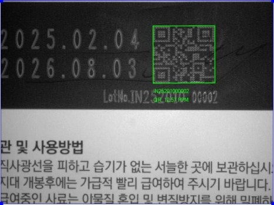
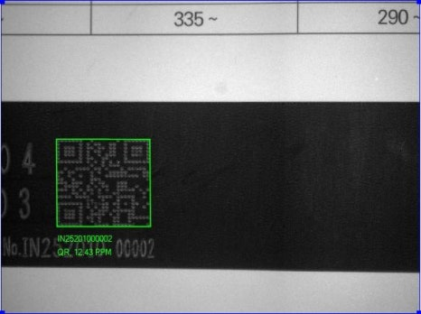
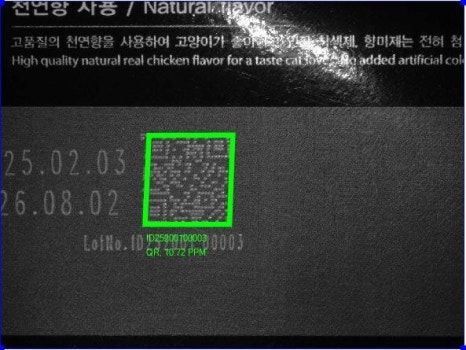
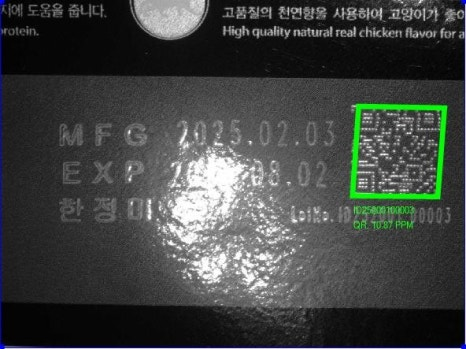
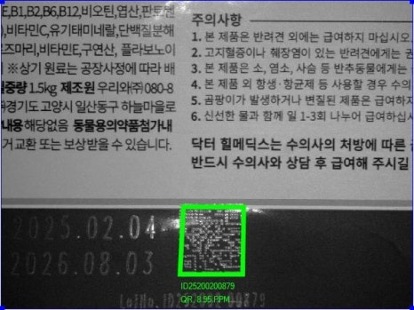
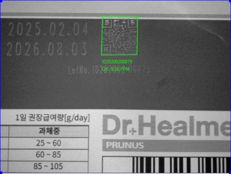
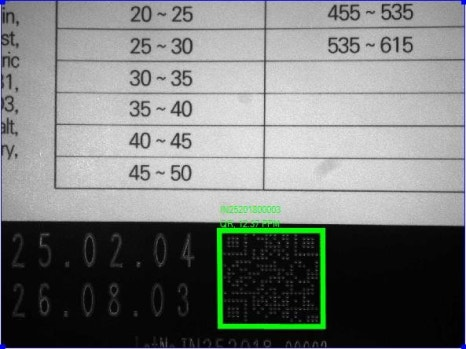
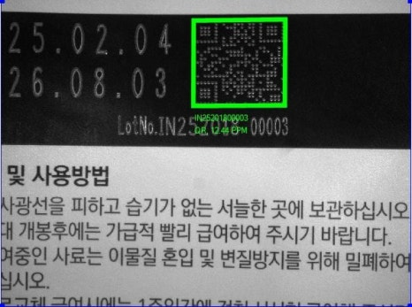

사료 · 포장 생산라인
사료 포대 높이·난반사 대응 바코드 리딩
Cognex DataMan 290과 리퀴드 렌즈, 제품별 조명 레시피를 적용하고 PLC로 레시피를 호출해 높이와 반사가 달라지는 포대 바코드를 판독한 사례입니다.

Project Summary
프로젝트 구성
- 산업
- 사료 · 포장 생산라인
- 검사 대상
- 사료 · 포장 생산라인
- 검사 목적
- Cognex DataMan 290과 리퀴드 렌즈, 제품별 조명 레시피를 적용하고 PLC로 레시피를 호출해 높이와 반사가 달라지는 포대 바코드를 판독한 사례입니다.
01 · Overview
프로젝트 개요
충진 상태에 따라 포대 높이와 구김이 달라지는 생산라인의 바코드 판독을 개선했습니다. 제품별 초점과 조명 조건을 정리하고 품종 변경에 맞춰 레시피를 호출하도록 구성했습니다.
02 · Problem
고객이 겪던 문제
기존 바코드 리더기는 제품에 따라 판독에 성공하거나 실패했습니다. 포장재의 재질과 색상, 높이, 구김이 달라 동일한 초점과 조명 설정을 유지하기 어려웠습니다.
03 · Solution
ASPEC 검사 구성
Auto Focus를 지원하는 리퀴드 렌즈로 높이 변화에 대응했습니다. Cognex DataMan 290의 조명 기능을 활용해 제품별 밝기와 조사 조건을 설정하고 AI 기반 판독 기능을 적용했습니다. PLC가 제품 레시피를 호출하도록 연동해 작업자의 반복 설정을 줄였습니다.
04 · Inspection Process
검사 방법
PLC에서 제품 레시피 호출 리퀴드 렌즈 자동초점 적용 제품별 조명 조건 적용 바코드 판독 및 생산 이력 활용
- 01PLC에서 제품 레시피 호출
- 02리퀴드 렌즈 자동초점 적용
- 03제품별 조명 조건 적용
- 04바코드 판독 및 생산 이력 활용
05 · Gallery
실제 검사 화면 및 이미지







06 · Result
적용 결과
- 높이와 포장 상태가 다른 사료 포대 판독
- 제품별 난반사 대응
- PLC 레시피 자동 호출
- 별도 외부 조명 없이 기존 설비 개선
07 · Technology
사용 기술 및 관련 제품
- Cognex DataMan 290
- 리퀴드 렌즈
- Auto Focus
- PLC 레시피 연동
- Cognex DataMan 290
- 산업용 바코드 리더기
비슷한 검사 문제를 검토하고 계신가요?
검사 대상, FOV, WD, 택타임과 불량 유형을 알려주시면 카메라·렌즈·조명, 비전 소프트웨어와 설비 연동 구성을 함께 검토합니다.